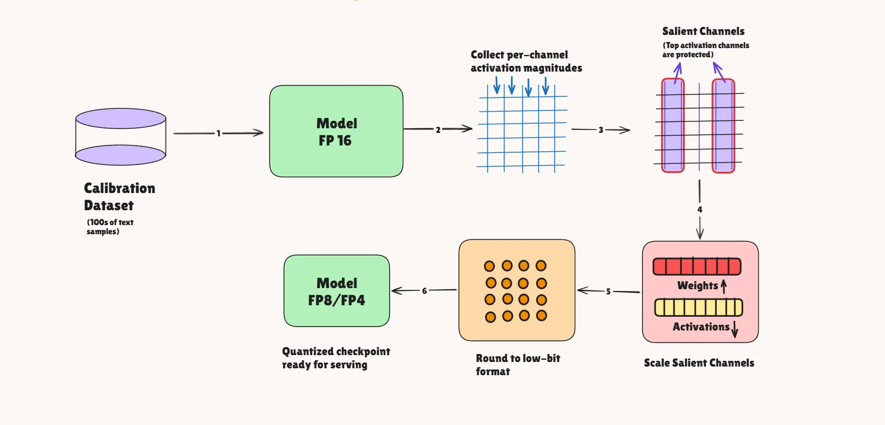
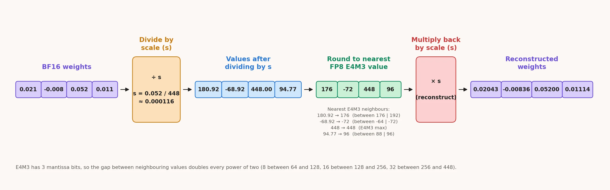
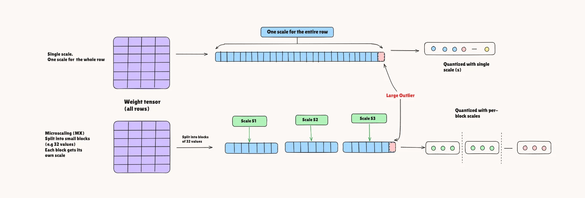
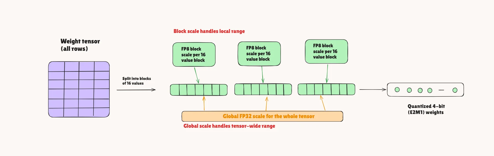
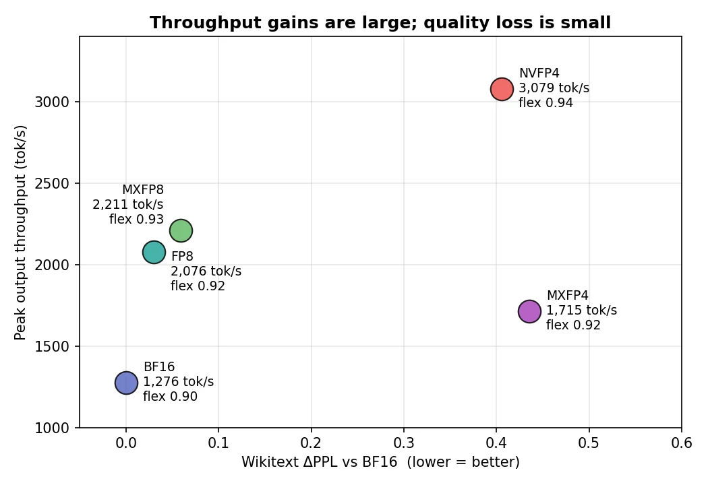
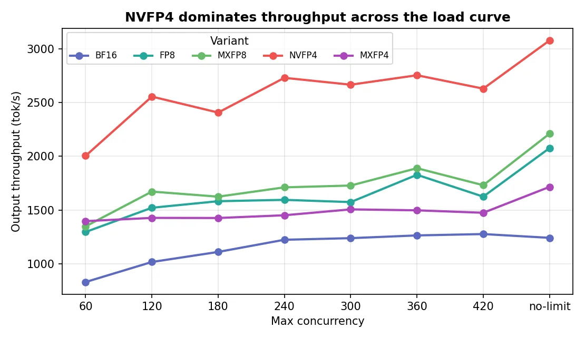
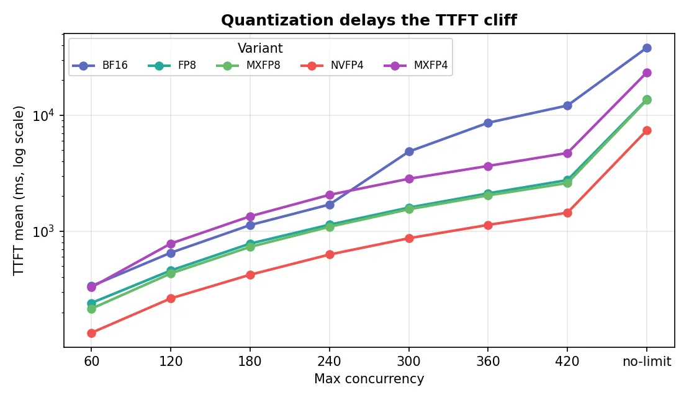

Blackwell上选量化格式不再是省多少显存的单选题。同一张RTX PRO 6000、同一个Qwen3-32B，FP8、MXFP8、NVFP4、MXFP4四种格式省的显存差不多，serving性能却天差地别：最快的比最慢的多出近一倍吞吐。
实测把账算清楚了：NVFP4-AWQ以2.41倍峰值吞吐、+0.41 PPL拿下总冠军；FP8系近乎零代价拿到约1.7倍；MXFP4因为没跑在原生kernel上成了反面教材。下面拆机制、摆数字。
长期以来，把模型从高精度降到低精度都有代价：省了显存，质量掉、加速小甚至没有。低精度更像为了把模型塞进显存而接受的妥协，而不是收益。
Blackwell改变了这一点。原生8-bit浮点不新鲜：Hopper（H100）与Ada（L40S）已经有FP8 Tensor Core。Blackwell新增的是原生FP4（以及FP6）数学与microscaling（MX）块格式的硬件支持，4-bit浮点直接跑在硬件上，而不是软件模拟。产品线从RTX PRO 6000 Blackwell Server Edition一直到数据中心的B200/GB200。老硬件上量化主要是让模型塞进显存，加速是附带的、通常很小的红利；Blackwell上低精度格式跑在专用硬件上，切到FP8/FP4带来真实、可测量的速度，而不只是省显存。
全部测试跑在RTX PRO 6000 Blackwell Server Edition上。B200为加速同样格式而生，测出的排序大概率成立，但没有实测。
选型因此变得重要且不再显然：FP8、MXFP8、NVFP4、MXFP4四种格式省的显存差不多，但在真实流量下行为完全不同，选错会浪费大量GPU。测试对象是Qwen3-32B，用AWQ量化成四种Blackwell浮点格式：FP8、MXFP8、NVFP4、MXFP4。去掉了FP6/MXFP6与FP8 E5M2（E5M2主要用于训练梯度，推理checkpoint用E4M3）。测两件事：质量（Wikitext困惑度、GSM8K准确率）与serving性能（各并发下的输出吞吐、首token延迟）。
直接把全部权重舍入到低精度会伤模型，因为少数权重承载了不成比例的行为。AWQ（Activation-aware Weight Quantization）的做法是在舍入前按通道重缩放权重。
关键观察：权重的重要性不在于权重本身的大小，而在于流经它的激活有多大。被大而频繁的激活相乘的通道，远比乘以接近零输入的通道重要。流程分四步：第一步校准，跑几百个真实文本样本过BF16模型，记录每层线性层输入激活的每通道平均幅度；第二步搜缩放，按激活幅度为每通道构造缩放（约activation_magnitude的 α 次方），网格搜索 α，对每种取值量化该层并保留输出误差最小的，激活越大的通道放得越大；第三步先缩放后舍入，权重通道乘以缩放（对应激活除回去补偿，数学结果不变），重要权重被放大后，舍入到粗网格时的相对误差变小；第四步量化，把重缩放后的权重舍入到目标低精度格式。
AWQ只读激活统计、不碰梯度，所以快、数据需求小。

浮点数分三部分：符号位、指数位（量级）、尾数位（量级内的精度）。BF16是1符号 + 8指数 + 7尾数；FP8（E4M3）是1 + 4 + 3：指数位更少（最大值只有448），尾数位少得多，能表示的网格很粗。
整张权重张量量级跨度大，FP8网格窄，直接cast会让小权重塌到零、大权重饱和。解法是缩放因子s，一组权重共享：除以s把组内数值搬进FP8可表示范围，舍入到最近的FP8值，计算时乘回s恢复原始量级。s取自组内最大绝对值，保证不饱和。
举例：四个BF16权重 [0.021, -0.008, 0.052, 0.011]。最大幅度0.052，E4M3最大值448，s = 0.052/448 ≈ 0.000116。除以s得180.92、-68.92、448.00、94.77；舍入到E4M3得176、-72、448、96；乘回s得0.02043、-0.00836、0.05200、0.01114，误差2.7%、4.5%、0%、1.3%。恢复值落在原值几个百分点内，缩放让3个尾数位能跟踪量级差很大的权重。

FP8-AWQ用块缩放：每128×128权重块一个缩放，激活按128分组动态量化。vLLM里32.04 GiB对BF16的61.03 GiB，约1.9倍，质量几乎无损，因为8-bit动态范围仍然够宽。
大组共享一个缩放的弱点：一个离群值逼出很大的缩放，组里所有小值都浪费精度。Microscaling（MX）把权重切成很小的块（通常32个值），每块一个独立的共享缩放（2的幂，存成紧凑的8-bit指数E8M0）。块越细越贴合局部量级，精度处处保得住。
MXFP8-AWQ是FP8的微缩放版：元素还是8-bit E4M3，但缩放从128×128块换成每32个值一块。局部性更强，质量基本贴着BF16，仍是8-bit格式。
MXFP4-AWQ把微缩放到4-bit浮点（E2M1：1符号、2指数、1尾数，可表示的量级只有约8种）。每32个值共享一个2的幂缩放。权重缩小约3.3倍（18.59 GiB对61.03 GiB），但每权重只有1个尾数位，质量代价真实存在。这次它没用上Blackwell的FP4 Tensor Core：跑的是vLLM的Marlin纯权重kernel、激活保持BF16，所以这里的速度反映的是fallback kernel，不是MXFP4格式本身。

NVFP4-AWQ是NVIDIA的4-bit浮点，为让4-bit真正可用而设计。元素与MXFP4一样是4-bit E2M1，但缩放做了两处改进：第一，块更小，16个值一块而不是32，局部性更细；第二，两级缩放，每16个值块配一个更高精度的FP8块缩放（不是2的幂），上面再加一个张量级的全局FP32缩放。高精度块缩放让微小的4-bit数落得离真值更近，这是MXFP4的粗糙2的幂缩放做不到的。

回报很大：NVFP4比BF16小约3.1倍（19.55 GiB对61.03 GiB；缩放因子占bit、部分层保留BF16），Blackwell原生4-bit Tensor Core让它成为测下来最快的格式，质量代价不大，它是Blackwell真正为之加速的格式。
四种格式的规律：FP8系几乎不换质量、权重小约1.9倍；FP4系推到3.1到3.3倍，靠更聪明的缩放（尤其是NVFP4的两级方案）控制质量代价。
激活也被量化了，不只是权重。这些checkpoint里FP8/MXFP8把激活量化到8-bit，NVFP4量化到4-bit；MXFP4是例外，fallback kernel让它的激活留在了BF16。这同时影响速度和质量。
模型Qwen3-32B；硬件RTX PRO 6000 Blackwell Server Edition；软件vLLM 0.24.0、lm-eval 0.4.12、compressed-tensors 0.17.0。精度基准：Wikitext困惑度（word PPL，WikiText-2 test split）与GSM8K（strict/flex，只取1319道测试题的前100道）。Serving基准：ShareGPT V3，1000个prompt一次全发（--request-rate inf），每个并发级别单跑一次。采样：temperature 0.6、top-p 0.95、top-k 20（Qwen3默认），开EOS停止。客户端/服务端：vllm bench serve / vllm serve。最大模型长度4096，GPU显存利用率0.90。
KV cache容量（token数）：BF16 93,312；FP8 212,864；MXFP8 208,192；NVFP4 264,272；MXFP4 267,200。开prefix caching，同一批带种子的prompt由一台server跑完全部并发扫描，结束时prefix cache命中率：BF16为0%，FP8/MXFP8约8%，NVFP4/MXFP4约14%，给量化模型一点额外加成。
量化用WikiText-2 train split的512样本 × 2048 token校准，双卡分片（单卡爆显存）。困惑度也在WikiText-2（test split）上测，同分布文本可能让困惑度看起来比别处好一点。
对比的量化变体：BF16（基线）、FP8-AWQ、MXFP8-AWQ、NVFP4-AWQ、MXFP4-AWQ。Serving标志：MXFP8-AWQ与NVFP4-AWQ默认跑；FP8-AWQ加VLLM_USE_DEEP_GEMM=0（关掉该checkpoint的DeepGEMM路径）；MXFP4-AWQ加VLLM_DISABLED_KERNELS=FlashInferMxFp4LinearKernel（禁用FlashInfer的MXFP4 linear kernel，vLLM回退到MarlinMxFp4LinearKernel：4-bit权重、BF16激活、BF16计算）。选Marlin回退是因为实验时vLLM在Blackwell上的原生MXFP4路径（FlashInfer kernel）还不够稳定，跑不动vLLM 0.24.0下这个checkpoint。
全部Qwen3-32B量化checkpoint用LLM Compressor（Neural Magic/vLLM的工具）产出，配方化脚本一次校准、输出四种格式，脚本与checkpoint都已开源。
Wikitext PPL：BF16 10.2079；FP8-AWQ 10.2378（+0.0299）；MXFP8-AWQ 10.2669（+0.0589）；NVFP4-AWQ 10.6136（+0.4056）；MXFP4-AWQ 10.6434（+0.4355）。GSM8K strict/flex：BF16 0.88/0.90；FP8-AWQ 0.88/0.92；MXFP8-AWQ 0.90/0.93；NVFP4-AWQ 0.89/0.94；MXFP4-AWQ 0.91/0.92。
FP8-AWQ与MXFP8-AWQ的困惑度几乎无损（+0.03、+0.06）。4-bit两个变体PPL移动大一些（约 +0.4），绝对值仍然小；MXFP4的数字与NVFP4不完全可比，因为NVFP4还量化了激活，这次的MXFP4没有。
GSM8K这次没退化，但只测了前100题，标准误约 ±3个点，0.88到0.94的spread按噪声处理，不当作推理变强。
结论：质量全线保住，选型几乎可以只看serving性能。
这张图把故事讲全了：横轴是相对BF16的Wikitext ΔPPL（越左质量越好），纵轴是各变体在自己最优并发下的峰值输出吞吐（越高越好），峰值对峰值。理想位置是左上：又快又准。

FP8-AWQ与MXFP8-AWQ聚在左上质量区：PPL离BF16不到 +0.06，吞吐已是1.63倍和1.73倍（2076、2211对1276 tok/s）。近乎免费的升级：质量几乎不花钱，吞吐多三分之二。
NVFP4-AWQ在图上窜得最高：无限制并发下3079 tok/s，是BF16峰值1276（并发420）的2.41倍。横轴跳到 +0.41 PPL看着大，绝对值只是从10.21到10.61，为全场最大的吞吐增益付的代价不大。
MXFP4-AWQ是明显的离群点、全场最差trade-off：质量在NVFP4右边（最差，+0.44 PPL），吞吐只有1715 tok/s，不及FP8/MXFP8，比NVFP4少约1360 tok/s。它跑的是Marlin纯权重kernel、BF16数学，拿到了4-bit的显存节省，没拿到FP4 Tensor Core的加速。
NVFP4-AWQ是明确的serving性能赢家，峰值达到BF16峰值输出吞吐的2.41倍。

NVFP4在曲线的每个点都是吞吐赢家：并发60起手2004 tok/s，已经超过BF16的天花板，一路爬到无限制并发的3078.91 tok/s。对次优变体的领先从608到1020 tok/s，负载越高差距不缩小。
MXFP8与FP8形成紧密的中段带，全程差约150 tok/s以内。MXFP8几乎处处略快（无限制并发2211对2076），是FP8系里吞吐更好的那个。
MXFP4远不及NVFP4，尽管都是4-bit：曲线近乎平坦，大部分区间1400到1500 tok/s，终点1715 tok/s，离BF16比离NVFP4近。原因是Marlin纯权重kernel：激活留BF16、数学跑BF16，从没用过Blackwell的FP4 Tensor Core。
BF16早早饱和在低位：并发240起plateau在1.2K到1.3K tok/s。61 GiB的BF16权重只给KV cache留约93000 token，对比量化模型的208000到267000。量化模型在高负载下的赢面，很多来自省出的显存，不只是更快的数学。
只看峰值吞吐会误导，重负载下的响应同样重要。对数坐标的平均TTFT视角下，分化非常明显。

并发360的数据：BF16 1263.09 tok/s、TTFT 8605.81 ms；FP8-AWQ 1827.83、2118.87；MXFP8-AWQ 1889.15、2035.59；NVFP4-AWQ 2754.87、1132.76；MXFP4-AWQ 1496.80、3650.93。各点都是单跑；360是FP8/MXFP8的高点（FP8在300/360/420并发是1574→1828→1624 tok/s，MXFP8类似），它们的吞吐读数略有水分。
并发360，NVFP4相对BF16吞吐2.18倍，平均TTFT降约7.6倍。
BF16的TTFT悬崖来得最早最陡：并发240到360，平均TTFT从约1.7秒涨到8.6秒，无限制并发超过38秒。KV cache被填满：BF16 server日志显示KV cache用到99.9%，请求排队，新请求光等第一个token就要数秒。
NVFP4把悬崖推得最远：全程TTFT最低，360并发1132 ms对BF16的8605 ms（7.6倍），无限制并发7.4秒对38秒（5.2倍）。KV cache空间大得多、4-bit数学更快，同时跑的请求更多、排队的更少，延迟是优雅降级而不是崩塌。
FP8/MXFP8紧跟NVFP4，360并发约2.0到2.1秒（约4倍于BF16），MXFP8多数点略快于FP8，和吞吐的小优势一致。
MXFP4是量化组里最差的：360并发3650 ms，好过BF16但明显落后FP8组合，比NVFP4慢3倍多；低负载（120/180/240）TTFT甚至不如BF16。反映的是它跑的Marlin fallback kernel，不是MXFP4格式本身。
y轴对数，纵向差距是乘法差距：高负载下NVFP4与BF16的TTFT差接近一个数量级。TPOT则混杂：NVFP4全程最低，但无限制并发下FP8（374 ms）、MXFP8（368 ms）、MXFP4（584 ms）的平均TPOT都高于BF16（264 ms）。
NVFP4-AWQ是总赢家：最高吞吐（3078.91 tok/s，2.41倍BF16峰值）、全负载最低延迟，代价只是 +0.41 PPL。Blackwell serving部署优化，默认选它。
FP8-AWQ是稳妥之选：质量近乎无损（+0.03 PPL），吞吐稳拿1.63倍，要的是最小质量变化而不是最大tok/s时选它。
MXFP8-AWQ是中间档：吞吐略好于FP8，质量代价仍然小；想比FP8再快一点又不碰4-bit时的合理默认。
MXFP4-AWQ这次没法下结论：跑的是Marlin纯权重fallback、BF16激活，这套配置下只有1.34倍吞吐，远落后NVFP4。测的是那个kernel，不是Blackwell FP4 Tensor Core上的MXFP4。
速查：最大serving吞吐选NVFP4-AWQ（3078.91 tok/s）；重负载最低延迟选NVFP4-AWQ（多数并发下TTFT/TPOT最低）；保守生产质量选FP8-AWQ（+0.0299 PPL）；FP8系平衡之选选MXFP8-AWQ（吞吐略胜FP8，+0.0589 PPL）；MXFP4-AWQ未在原生kernel上测（Marlin fallback，PPL代价与NVFP4相近但吞吐低得多）。今天要在Blackwell上发一个serving workload，选NVFP4-AWQ，FP8-AWQ做保守备选。
参考：https://jarvislabs.ai/blog/blackwell-dtypes-qwen3-32b